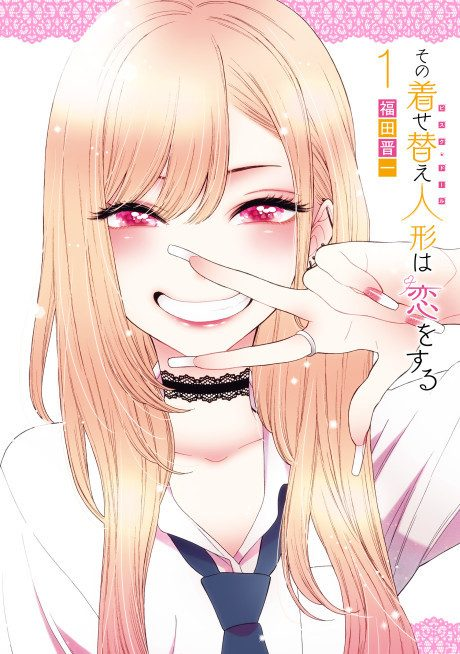

Animeter
 Anime
Anime
Manga2022 · Comedy, Ecchi, Romance
My Dress-Up Darling
その着せ替え人形は恋をする
AniList8.0
Animeter—
2 seasons24 ep
MangaCh. 86
Key events
These are spoilers. They stay blurred until you reveal them, one at a time or all at once.
Shizuku-tan Ep 1–5
- Gojo agrees to make Marin's Shizuku Kuroe cosplay.
- Gojo's grandfather collapses and Gojo finishes the outfit early.
- Marin debuts the cosplay at her first event, and Gojo compliments her sincerely.
Black Lobelia Ep 6–9
- Marin realizes she has fallen for Gojo.
- Juju is revealed as Sajuna Inui, and her sister Shinju joins the shoot.
- Shinju admits she wants to cosplay a male character.
Veronica and Liz Ep 10–11
- Gojo refuses to make the revealing Veronica outfit.
- A Liz the Succubus photoshoot takes place at a love hotel and leads to a tense moment.
Summer Festival Ep 12
- Marin and Gojo watch the fireworks together.
- Marin confesses her love while Gojo is asleep.
Halloween and Amane Ep 13–15
- The Arisha bunny-girl outfit debuts at a Halloween party.
- Amane Himeno, a man who crossplays, appears at an aquarium event.
- Gojo reflects on his feelings for Marin.
Culture Festival Pageant Ep 16–18
- Marin chooses to cosplay Rei for the pageant.
- Classmates help Gojo adjust the costume.
- Marin wins the pageant.
Akira and the Coffin Shoot Ep 19–24
- Akira Ogata is revealed to be a woman.
- Gojo stays at Marin's after trains are suspended.
- Juju's inferiority complex and Akira's backstory come to light.
- The group completes the Coffin shoot and Gojo and Marin walk home together.